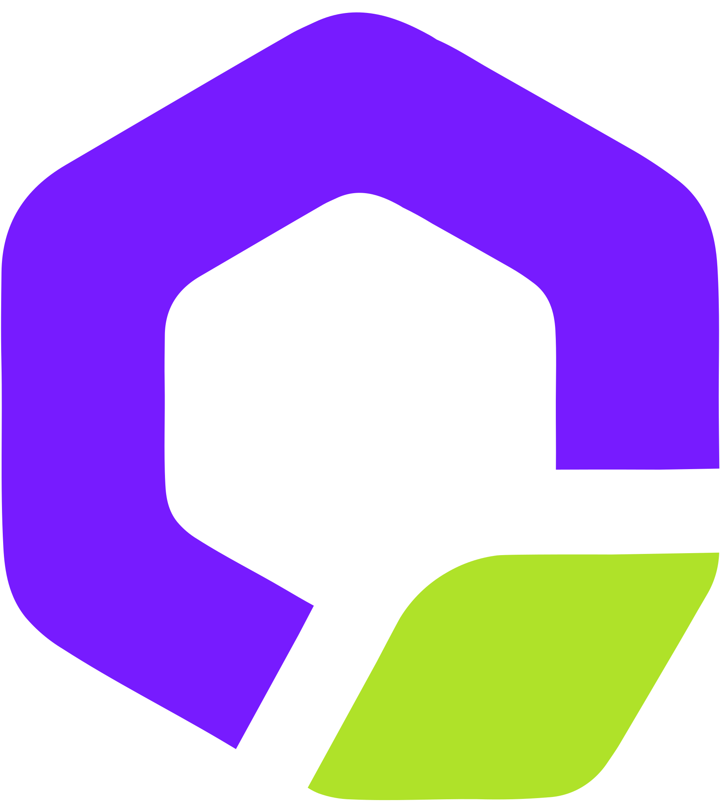

CONTACT
SKILLS
Java, HTML, CSS, Javascript
EDUCATION
동서울대학교 - 럭셔리워치주얼리 전공 (2020-2023)
작전고등학교 (2017-2019)
Java, HTML, CSS, Javascript
동서울대학교 - 럭셔리워치주얼리 전공 (2020-2023)
작전고등학교 (2017-2019)
개인 프로젝트
프로잭트로 이동
경험상 책을 읽고 나서 노트 앱이나 메모정도로 감상을 적곤 했던 기억에 만약 책에
1:1로 리뷰를 달아둘 수 있는 공간을 직접 만들어보는 것도 좋겠다 하는 생각에서 시작되었습니다.
비회원일 때는 책을 검색하거나 장르별, 베스트셀러 별로 정렬된 리스트를 보는게 전부이지만
회원일 때는 리뷰를 작성할 수 있는 웹입니다.


팀 프로젝트
프로잭트로 이동
목표를 쇼핑몰 웹으로 잡고 목표에 맞게 코딩하는 방법을 익히고자 SSG몰의 일종인
nobrand의 쇼핑몰을 대상으로 클론코딩을 진행하였습니다.
원본사이트 : SSG쇼핑몰 - Nobrand (https://emart.ssg.com/specialStore/nobrand/main.ssg)
